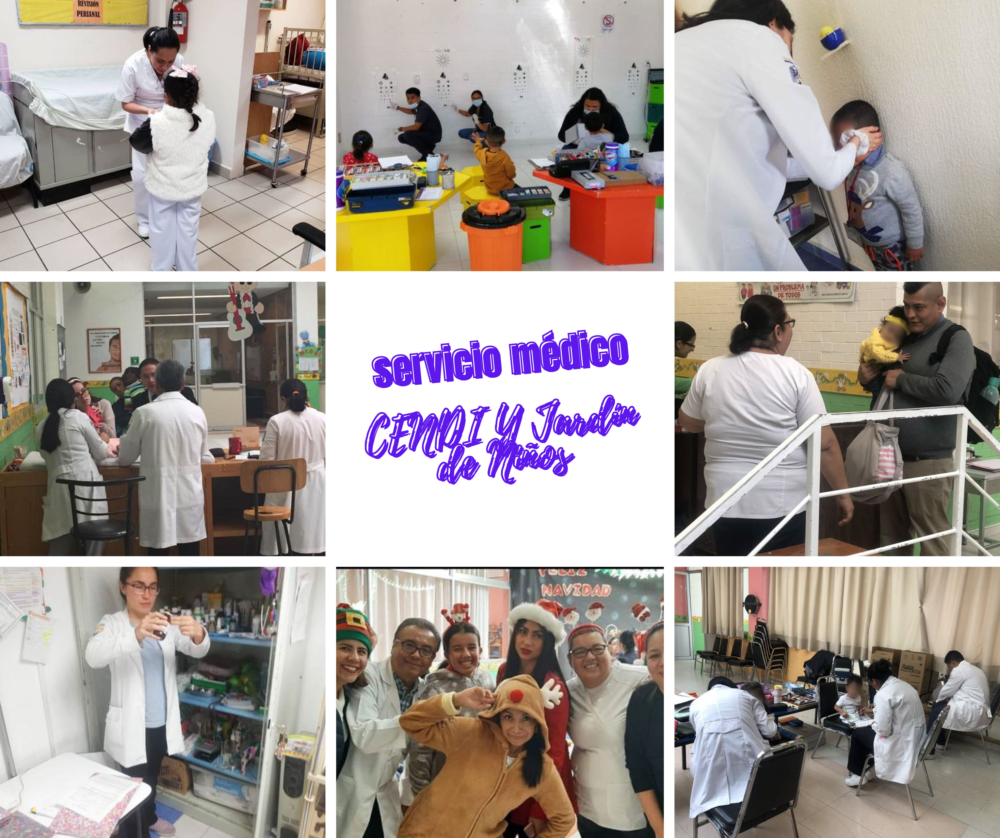

El objetivo del Servicio Médico de los CENDI y Jardín de niños es promover y preservar la salud de los niños y niñas. Para propiciar un crecimiento y desarrollo armónico en un ambiente saludable, mediante acciones Médico-Preventivas con la participación activa de los niños y niñas, padres de familia y agentes educativos. Área compuesta por dos médicos y dos enfermeras que ofrecen atención medica de primer contacto a los niños del CENDI, organizados en un horario que permite dar esta atención de 7:00 a 18:00 horas, responsable de las medidas sanitarias y de higiene general a aplicarse con el fin de preservar la salud de la comunidad CENDI.
